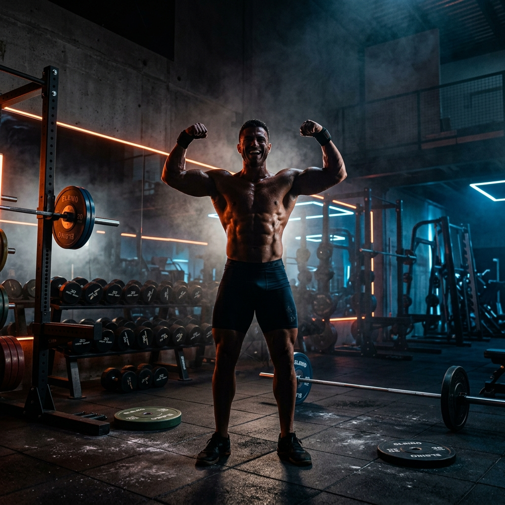
Ek complete visual guide jo tujhe 57 kg se 67-72 kg tak le jaayegi — maximum muscle, minimum fat. Har exercise, har meal, har supplement — sab kuch ek jagah. 🎯
Antagonistic muscle pairing — jab ek muscle kaam karta hai, dusra rest karta hai. Isse dono muscles ko full intensity se train kar sakta hai. Har muscle week me 2 baar hit hota hai — optimal growth ke liye! 💯
Jab tu Chest (Push movement) karta hai, tere Biceps (Pull movement) rest kar rahe hote hain. Isliye Chest ke baad Biceps ko full fresh energy se train kar sakta hai. Similarly, Back ke baad Triceps fresh hota hai. Yeh pairing fatigue ko prevent karta hai aur dono muscles ko maximum effort se train karne deta hai!
Research kehti hai ki natural lifters ke liye har muscle ko per week 2 baar train karna — 1 baar se zyada effective hai muscle growth ke liye. Monday aur Thursday dono me Chest + Biceps karo, lekin Thursday me different exercises ya rep range use karo variety ke liye. Isse muscle protein synthesis 48 hours ke baad dobara trigger hota hai!
Har workout se pehle 8-10 minute ka warmup MANDATORY hai. Injury se bachata hai aur performance improve karta hai. Kabhi skip mat karna! ⚠️
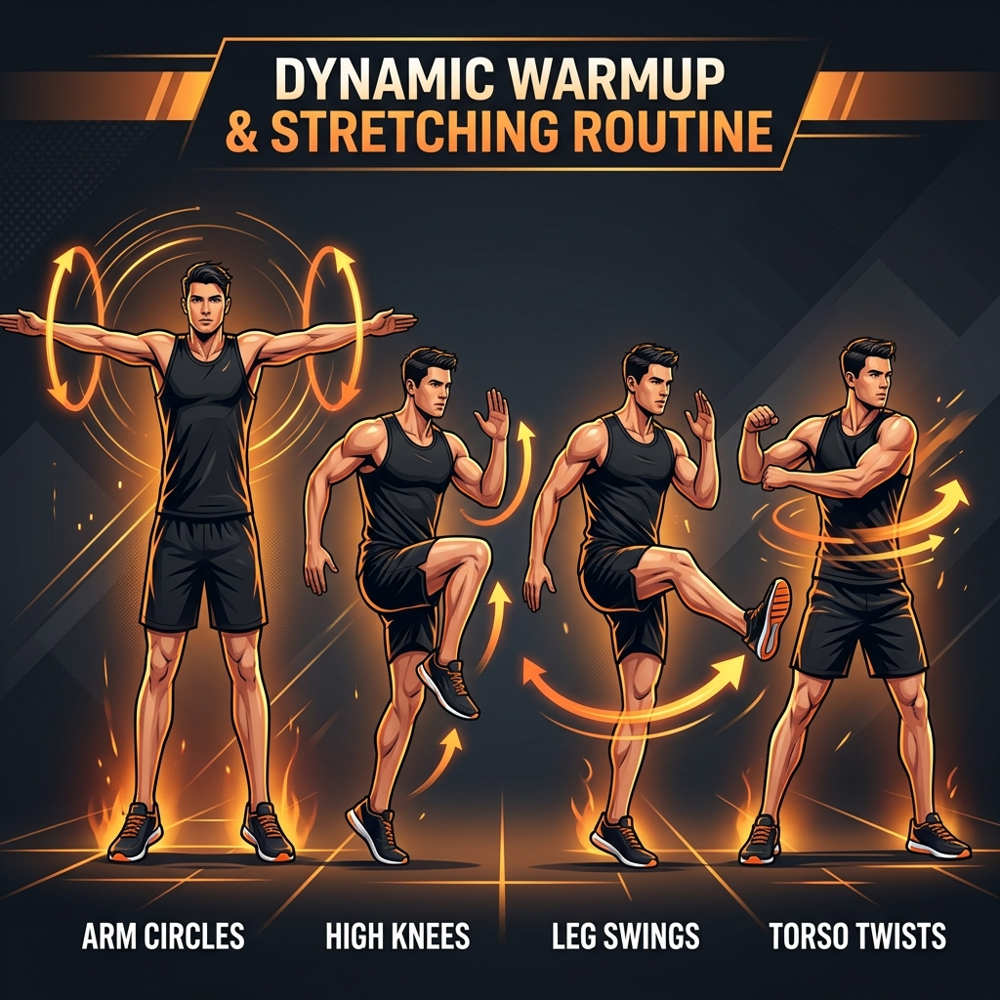
Treadmill pe brisk walk ya slow jog karo. Heart rate slowly badhao. Yeh blood flow muscles tak le jaata hai aur body ko workout ke liye ready karta hai. Speed rakho 5-6 km/h. Cycling bhi kar sakte ho alternative me.
Dono arms ko side me spread karo aur chote circles se shuru karke bade circles banao. 30 seconds forward, 30 seconds backward. Shoulder joints ko loosen karta hai aur rotator cuff ko warm karta hai. Chest aur Shoulder day pe extra zaruri.
Wall ya rack pakad ke khade ho. Ek pair ko aage-peeche swing karo — 15 swings per leg. Phir side-to-side bhi karo. Hip flexors aur hamstrings ko warm karta hai. Leg day pe mandatory, baaki days pe optional.
Pair shoulder width apart. Arms ko chest level pe bend karke left-right twist karo smoothly. 20 twists total. Core aur lower back ko warm karta hai. Deadlift, Rows, aur Squats se pehle bahut zaruri hai.
15 bodyweight squats karo slow and controlled. Full depth tak jaao. Knees ko toes ki direction me jaane do, aur back straight rakho. Quads, glutes, aur hip joints sab warm ho jaate hain. Har day pe kar sakte ho.
Sabse important! Pehle exercise ke pehle 2 warmup sets karo — pehla set 50% weight se 15 reps, dusra set 70% weight se 10 reps. For example: agar Bench Press me 40kg lagata hai, toh pehle 20kg se 15 reps, phir 30kg se 10 reps, phir working set shuru karo.
Har exercise ka proper form, sets, reps, aur tips — sab kuch yahan hai. Day select karo aur training shuru karo!
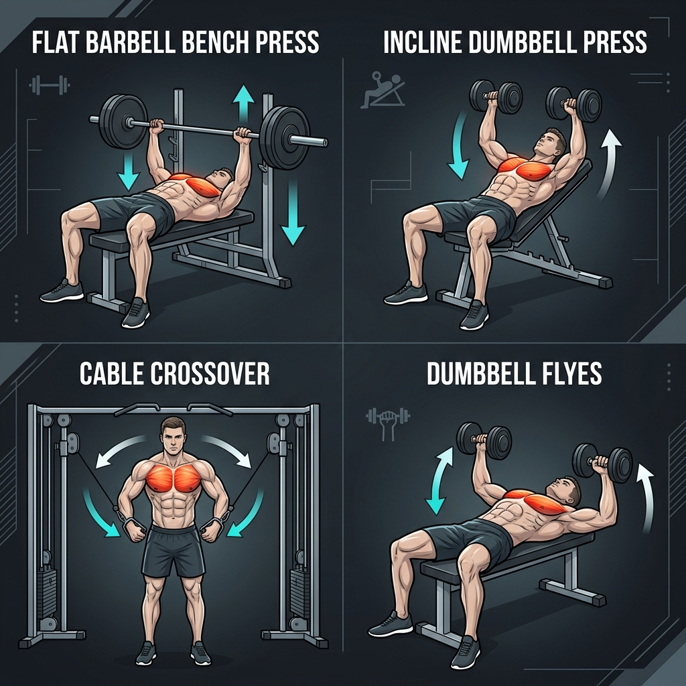
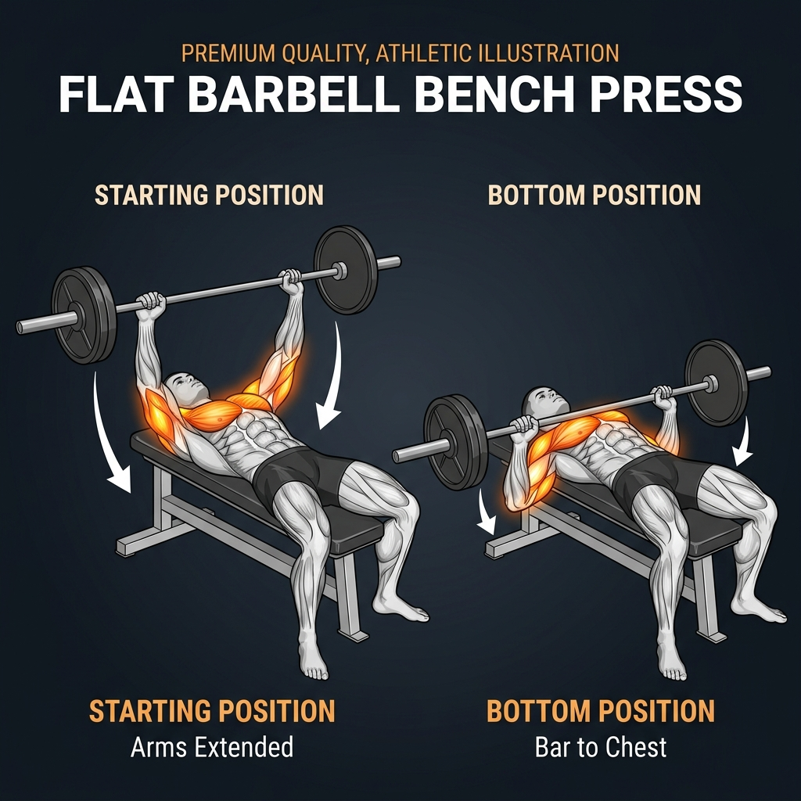
Shoulder blades ko squeeze karke retract karo (peeche la ke tight karo) — isse chest ko better stretch milta hai. Feet ko press karo floor me stability ke liye. Beginner ho toh 20-30 kg se shuru karo, form perfect karo pehle.
Bar bounce mat karo chest pe. Butt bench se mat uthao. Elbows 90° flare mat karo (shoulder injury hota hai). Incomplete range of motion — full neeche aao aur full upar jao.
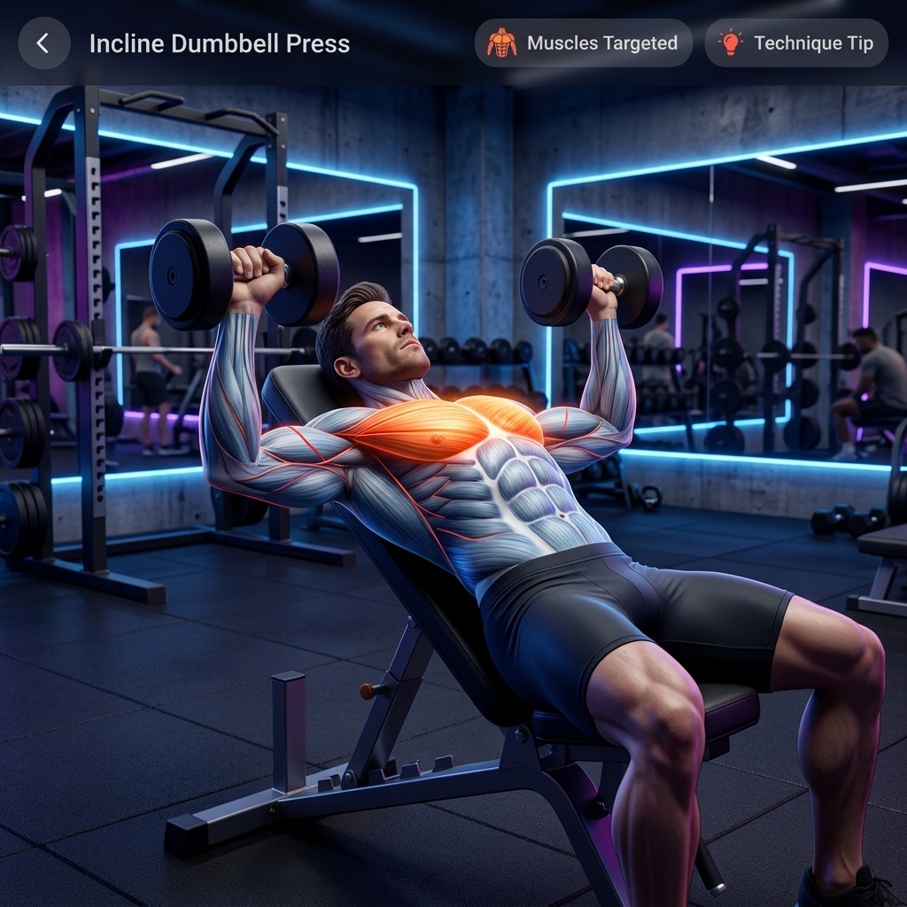
Upper chest ko develop karna hai toh yeh exercise king hai. Bench 45° se zyada mat karo — warna front delt zyada kaam karega. Slow negative (3 seconds neeche) rakhne se muscle fiber zyada break hota hai = zyada growth.
Dumbbells ko zyada neeche mat lao (shoulder strain hoti hai). Weight zyada mat lo — form pehle. Back ko bench se mat uthao.
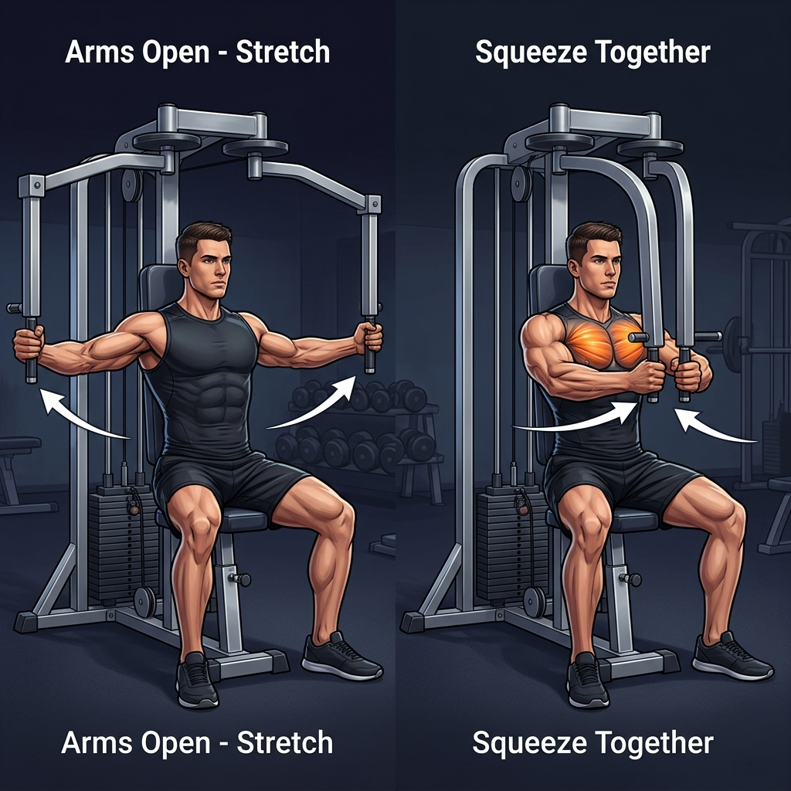
Yeh isolation exercise hai — chest ko squeeze karna focus karo, arms se push mat karo. Light weight lo, mind-muscle connection build karo. Har rep pe 2 second ka squeeze top pe rakhne se inner chest develop hoti hai.
Too heavy weight — ego lifting mat karo is machine pe. Shoulders forward mat lao. Fast reps mat karo — slow and controlled.
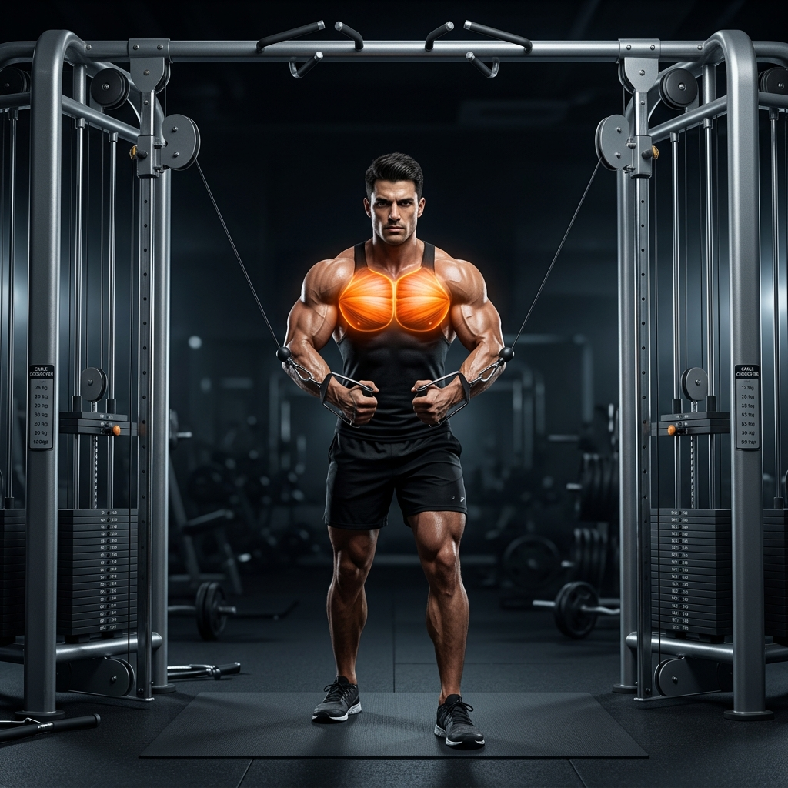
Low-to-high angle upper chest target karta hai. High-to-low angle lower chest target karta hai. Body ko mat hilao — sirf arms move hone chahiye. Constant tension milti hai cables se jo dumbbells me nahi milti.
Body ko swing karke weight uthana. Arms ko zyada straight karna (elbow strain hota hai). Weight zyada lena — yeh finisher exercise hai, light weight lo.
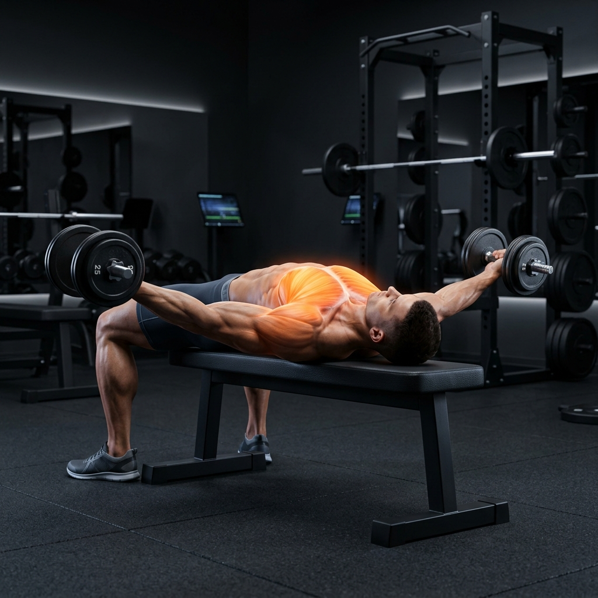
Yeh chest ka best stretching exercise hai. Very light weight lo (5-8 kg se start karo). Imagine karo ki tum ek bade tree ko hug kar rahe ho. Slow negative (3-4 seconds) sabse effective hai.
Heavy weight — yeh isolation hai, heavy mat jao. Arms ko straight karna (elbow injury hoti hai). Too deep stretch — shoulder strain hoti hai.
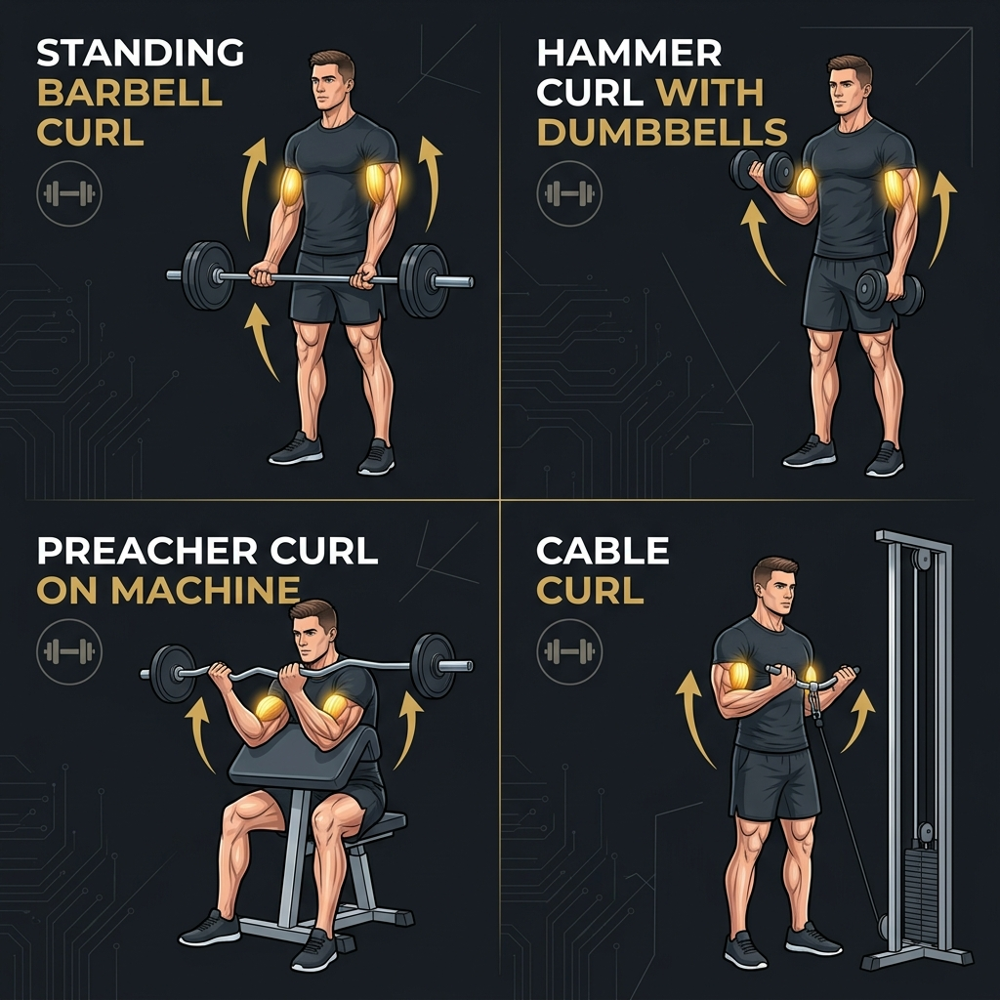
EZ bar use karo agar wrist me pain ho toh. Standing position me core engage rakho. Bicep ka king exercise hai yeh — compound movement hai bicep ke liye. Wrist mat fold karo — straight rakhna.
Body swing karke weight uthana (cheat curl). Elbows ko aage laana. Half reps — full range of motion use karo. Wrists ko curl karna upar.
Incline position bicep ka long head target karta hai — jo peak (topi) banata hai. Yeh stretch-focused exercise hai — slow negative sabse important hai. Light weight lo, 5-7 kg dumbbells se start karo.
Bench se upar uthna. Elbows ko aage laana (tension bicep se hat jaati hai). Fast reps — yeh exercise slow karna hai.
Yeh Brachialis muscle target karta hai jo bicep ke neeche hota hai — arm ko wider aur thicker dikhata hai. Forearms bhi train hote hain. Arms ki overall thickness ke liye must-do exercise hai.
Wrist rotate karna curl me. Body swing karna. Cross-body hammer curl mat karo pehle — straight rakhna hai.
Cheating impossible hai is exercise me — pure bicep isolation. Short head (inner bicep) zyada target hota hai. Peak banane ke liye best exercise. Machine version safer hai beginners ke liye.
Full extend karke lock karna (bicep tendon injury hoti hai). Body uthana pad se. Fast negative — 3 seconds minimum neeche aana chahiye.
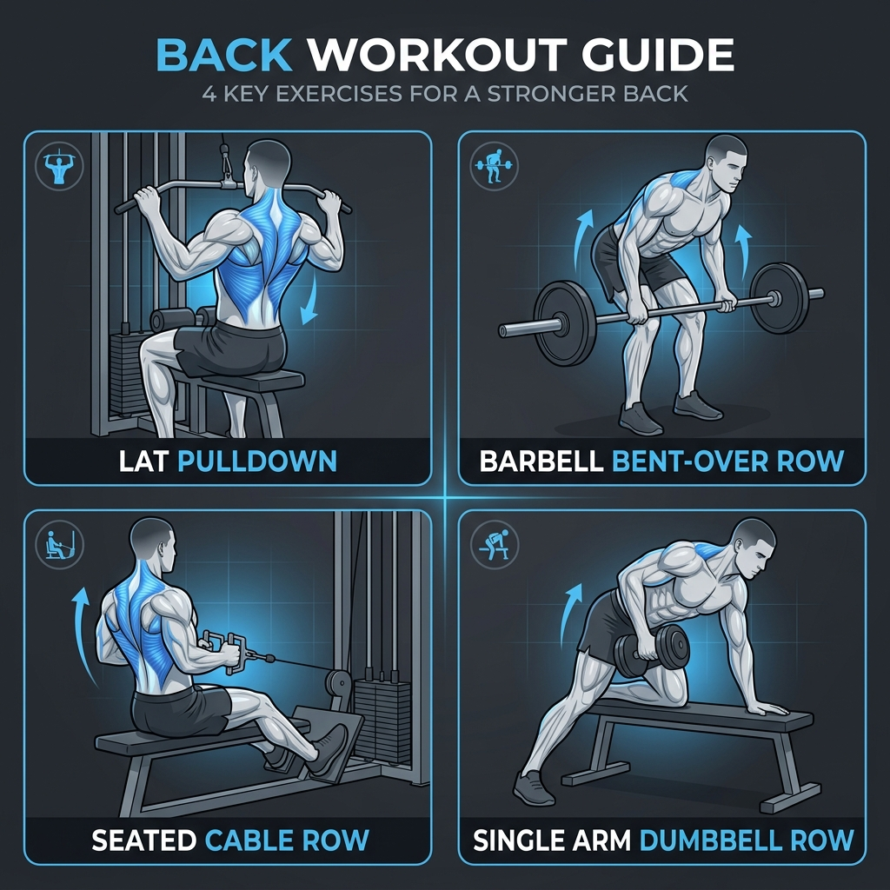
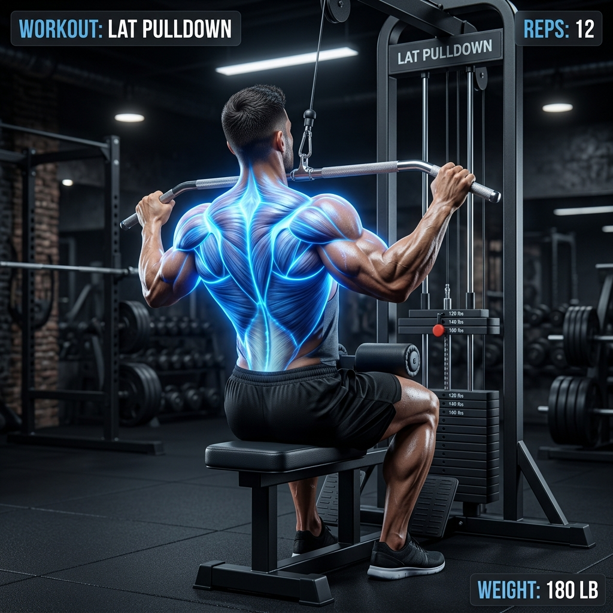
Imagine karo ki elbows ko hip pockets me daal rahe ho — yeh cue lats ko activate karta hai. Arms se mat kheencho, back se pull karo. Wide lats = V-taper body shape. Beginners 25-30 kg se start karein.
Bar ko neck ke peeche pull karna (shoulder injury). Zyada lean back karna (lower back kaam karega). Biceps se pull karna instead of back.
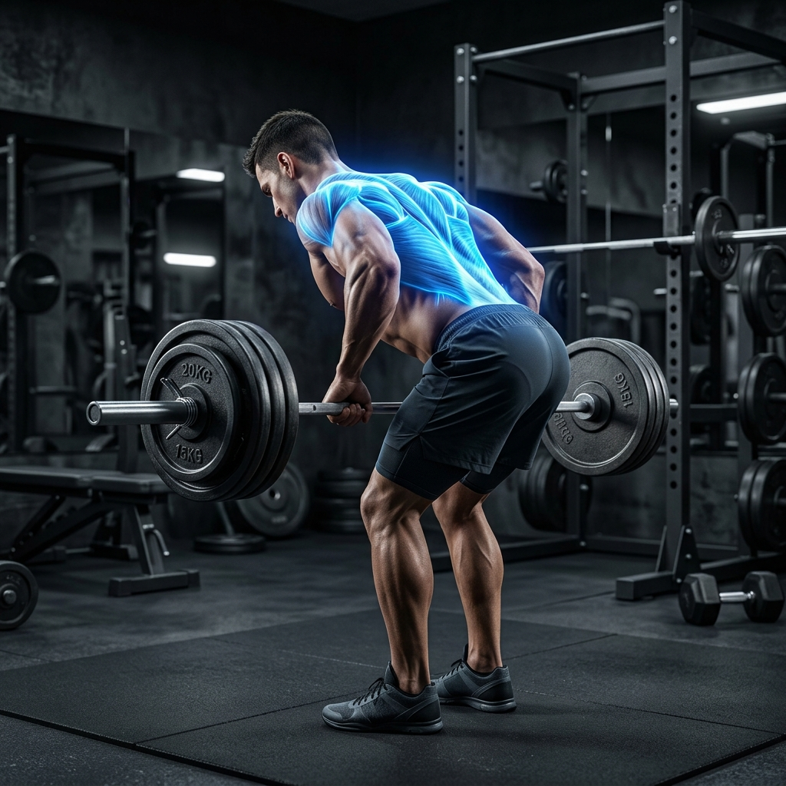
Back thickness ke liye yeh #1 exercise hai. Overall back ka mass builder. Lower back ko protect karne ke liye belt use karo heavy weights pe. Start karo 20-30 kg total barbell weight se.
Back round karna (disc injury risk). Body uthake weight uthana. Jerky movements — controlled rakhna. Bar ko chest tak laana instead of belly.
Mid-back thickness ke liye best. V-handle use karo close grip ke liye — inner back target hota hai. Wide handle use karo upper back aur rear delts ke liye. Dono variations karo alag alag days pe.
Zyada lean back karna (rowing nahi, leaning ho jayega). Arms se pull karna. Fast reps — controlled slow reps zyada effective hain.
Unilateral exercise hai — dono sides equally train hote hain, imbalance fix hota hai. Lats ko individually feel kar sakta hai. Dumbbell ko thoda rotate karo top pe for extra lat squeeze.
Torso rotate karna. Dumbbell ko shoulder tak laana instead of hip. Jerky lifting — smooth motion chahiye.
Pure lat isolation — biceps involved nahi hote. Lat width ke liye excellent. Mind-muscle connection build karne ke liye best exercise. Finisher ke roop me karo back workout ke end me.
Elbows zyada bend karna (pulldown ban jaata hai). Body swing karna. Heavy weight — light jao, squeeze karo.
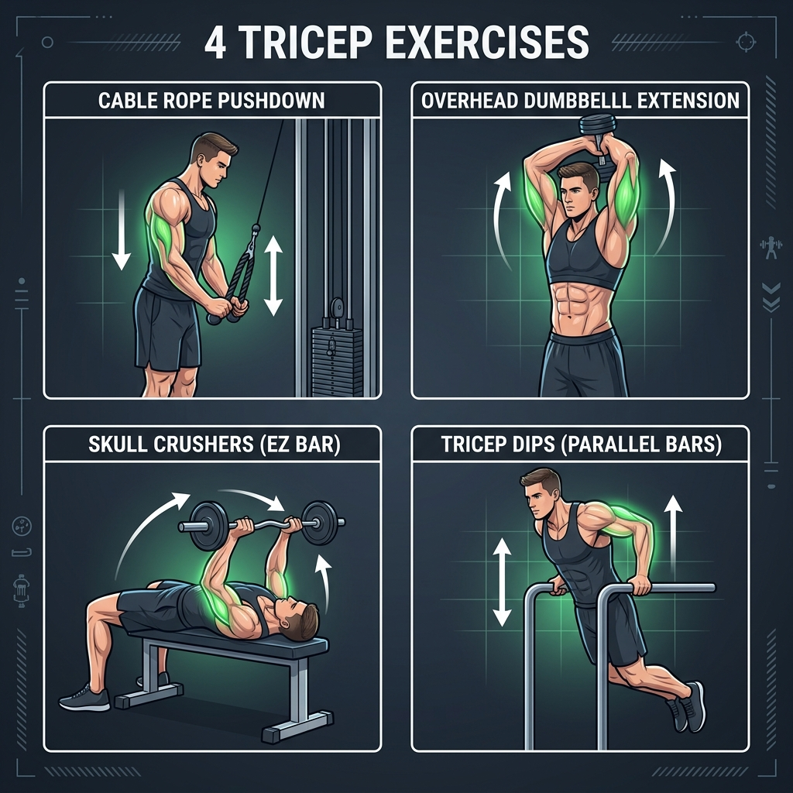
Lateral head target hota hai — jo arms ko side se bada dikhata hai. Bottom pe rope split karna extra contraction deta hai. Cable se constant tension milti hai — dumbbell se better isolation.
Elbows ko flare karna ya aage-peeche move karna. Body se push karna. Rope ko split na karna bottom pe. Incomplete reps.
Long head target karta hai — jo tricep ka sabse bada part hai (arm ke peeche ka upper portion). Seated position me karo stability ke liye. Stretch position me maximum muscle fiber recruitment hota hai.
Elbows flare karna outwards. Back arch karna. Dumbbell sir pe girne ka risk — controlled weight lo. Fast reps — slow negative 3 seconds minimum.
All three heads ko equally target karta hai. Arms builder #1 hai yeh. EZ bar wrist pe easy hai. Light weight se start karo — 15-20 kg total. Spotter rakhna heavy sets pe.
Bar ko face pe laana (dangerous! Naam isliye skull crusher hai). Elbows flare. Heavy ego lifting — form pehle.
Compound movement hai tricep ke liye — heavy jaa sakte ho safely machine pe. Body upright (seedha) rakhna — lean forward kiya toh chest kaam karega. Beginner ho toh machine use karo.
Zyada neeche jaana (shoulder strain). Forward lean (chest exercise ban jaata hai). Half reps — full range of motion use karo.
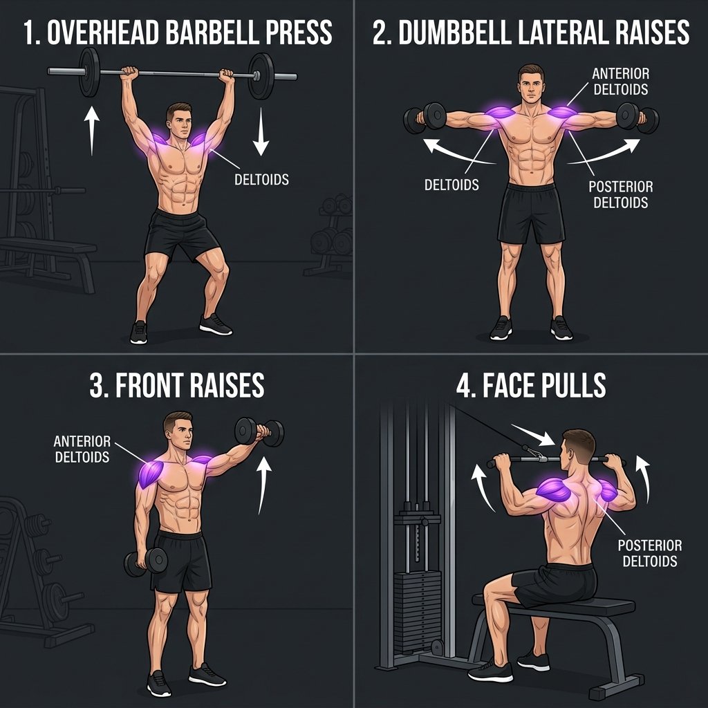
Front + side delt dono target hote hain. Shoulder building ka #1 exercise. Dumbbells barbell se safer hain shoulders ke liye. 8-10 kg se start karo per hand. Core tight rakhna — arch mat karo.
Back arch karna (lower back strain). Dumbbells ko zyada neeche laana (shoulder impingement). Arms zyada wide flare karna.
SIDE DELTS ka #1 exercise — yeh wide shoulders banata hai. Very light weight lo (3-5 kg). Form > weight. 4 sets high reps — side delts ko high volume chahiye growth ke liye. Cable lateral raise bhi try karo — constant tension milti hai.
Heavy weight = body swing = front delt kaam karega. Shoulder shrug karna (traps lagi). Arms zyada upar uthana (shoulder impingement). Fast reps.
Rear delts + rotator cuff + upper back — sab ek me. Posture improve karta hai. Shoulder injuries prevent karta hai. EVERY workout me yeh karna chahiye ideally. Light weight — high reps — daily kar sakte ho.
Heavy weight — yeh exercise light weight me karna hai. Bicep se pull karna. Body lean back karna. Pulley position galat — eye level hona chahiye.
3D shoulders ke liye rear delt zaruri hai. Most people skip karte hain — tu mat karna. Rounded shoulders fix karta hai. Light weight, high reps — rear delts ko volume chahiye.
Heavy weight se traps take over kar leti hain. Arms zyada straight karna. Body momentum use karna.
Upper traps build karta hai — neck ke dono side ka muscle jo powerful look deta hai. Heavy jaa sakte ho — traps strong hote hain. 15-20 kg per hand try karo.
Neck roll karna (dangerous for cervical spine). Arms bend karna. Weight bounce karna.
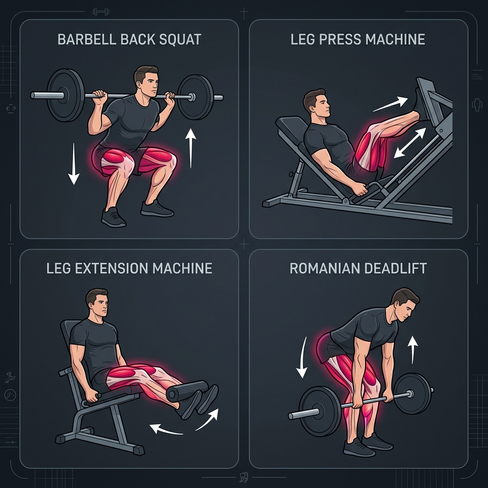
KING OF ALL EXERCISES — poora body train hota hai. Testosterone boost hota hai. Leg growth ke liye non-negotiable. Empty bar (20 kg) se start karo, form perfect karo. Belt use karo heavy pe.
Knees cave in (valgus) — bahar push karo. Heels uthna (ankle mobility issue — heel elevated shoes try karo). Butt wink (lower back round hona at bottom). Half squats — full depth jaao.
Squats ke baad best quad exercise. Safely heavy jaa sakte ho — back pe load nahi aata. Foot placement change karke different muscles target karo. 60-80 kg se start karo (machine me).
Butt pad se uthana (lower back round hota hai). Knees lock karna (knee injury). Too heavy too soon — progressive overload follow karo.
Pure quad isolation — teardrop shape banane ke liye. Top pe squeeze sabse important hai. Toes point karo thoda inward inner quads ke liye, outward outer quads ke liye. Light weight, high reps best hain.
Momentum use karna — controlled karo. Butt uthana. Too heavy — yeh isolation hai. Incomplete extension at top.
Hamstring isolation ka best exercise. Hamstrings ko ignore karna injury risk badhata hai aur legs unproportionate lagti hain. Toes point karo (plantar flex) calves ko disengage karne ke liye.
Hips uthana machine se. Fast jerky reps. Only halfway curl karna — full range karo.
Hamstrings + Glutes ka KING exercise. Regular deadlift se different — yeh hamstring-focused hai. Bar ko body ke paas rakhna throughout. Light weight se start karo — 20-30 kg. Dumbbells se bhi kar sakte ho.
Back round karna — MOST DANGEROUS mistake. Knees zyada bend karna (squat ban jaata hai). Bar body se door jaana (lower back pe stress).
Calves stubborn muscles hain — high reps aur high frequency chahiye. Har leg day pe karo + extra days pe bhi. Full stretch at bottom is KEY — yahan log shortcut lete hain. Pause 2 seconds at bottom, 2 seconds at top.
Bouncing — no momentum. Half reps — FULL range of motion. Too fast — slow and controlled. Knees bend karna (quads take over).
Thursday ko same muscles train kar rahe ho but different exercises aur rep ranges se — yeh varied stimulus deta hai, different muscle fibers target hote hain, aur muscle protein synthesis dobara trigger hoti hai. Session A (Monday) heavy compound focused hai, Session B (Thursday) moderate-to-light isolation focused hai.
Dumbbells allow greater range of motion than barbell — deeper stretch = more growth. Each arm independently works — fixes imbalances. Monday barbell kiya, Thursday dumbbell karo — variety!
Dumbbells clash karna top pe. Too deep at bottom. Uneven pressing (one arm faster).
Lower chest target karta hai — chest ka lower border define karta hai. Monday ko flat + incline kiya, Thursday ko flat + decline — full chest coverage ho jaati hai week me.
Bar bounce karna. Head rush (blood rush to head) — slowly position change karo. No spotter on heavy weights.
Monday ko low-to-high (upper chest) kiya tha, aaj high-to-low (lower chest) karo. Different angle = different fiber recruitment. Yeh tera chest finisher hai — pump chase karo!
Arms zyada straight (elbow strain). Body swing. Too heavy weight on isolation.
Best chest finisher — saara remaining muscle fiber fatigue hota hai. Chest already exhausted hai toh bahut effective hai at end. Form maintain karo even when tired — quality over quantity.
Hips sagging. Head dropping. Partial reps. Speed over form.
Bicep peak (mountain) banane ke liye sabse effective exercise. EMG studies me sabse high bicep activation yahi deta hai. Cheat karna impossible hai — pure isolation. 5-7 kg se start karo.
Elbow thigh se uthana. Body lean karna help ke liye. Fast reps — slow and squeeze!
Cable se tension CONSTANT rehti hai — neeche bhi, upar bhi. Dumbbells me neeche pe tension kam ho jaati hai. Isse pump bahut intense milta hai. Finisher ke roop me use karo.
Body lean back. Elbows movement. Too heavy — pump exercise hai yeh, light jao.
Brachialis ko target karta hai — arms ko wider banata hai. Regular hammer curl se different angle deta hai. Monday regular hammer kiya, Thursday cross-body karo — complete coverage!
Body rotation. Elbow movement. Too heavy weight — form first.
Tuesday ko heavy compounds kiye (Bent Over Row, Lat Pulldown). Friday ko focus hoga — close grip variations, isolation movements, aur higher reps. Yeh different muscle fiber types ko target karega aur recovery allow karega.
Close grip = lower lats focus. Tuesday ko wide grip kiya tha. Dono milake lat ki full development hoti hai. V-handle se greater range of motion milti hai.
Zyada lean back. Biceps se pull karna. Incomplete reps.
Mid-back thickness ka monster exercise. Chest-supported version lower back pe stress nahi deta. Tuesday ko free bent over row kiya, Friday ko supported T-bar row — safety + variety dono.
Jerky pulling. Using body momentum. Not full range of motion.
Wide grip = upper back aur rear delts focus. Tuesday ko close grip kiya tha. Dono grips milke back ka poora area cover karte hain. Posture improvement ke liye excellent.
Lean back zyada. Bicep pull. Rounding forward.
Lower back (erector spinae) ko strengthen karta hai. Squats aur Deadlifts me safer banata hai. Glutes bhi train hote hain. Weight plate chest pe rakh sakte ho progression ke liye. Bodyweight se start karo.
Zyada hyperextend karna (spine compression). Jerky movements. Rounding at bottom.
Tricep ke liye best compound exercise — heavy jaa sakte ho safely. Chest bhi secondary me kaam karta hai. Grip zyada narrow mat karo — wrist strain hoti hai. Shoulder width perfect hai.
Grip too narrow. Elbows flare. No lockout at top.
Cable version of overhead extension — constant tension + safe. Long head tricep ko amazing stretch milti hai. Tuesday ko dumbbell overhead kiya tha, Friday ko cable — same movement, different resistance curve.
Elbows flare. Back arch. Using body momentum.
Tricep ka best isolation — squeeze pe focus karo. Cable se constant tension — dumbbells se better. Finisher ke roop me karo — maximum pump ke liye. Light weight — 3-5 kg is enough.
Swinging arm. Elbow dropping. Not full extension. Too heavy.
Wednesday ko heavy compound focus tha (Shoulder Press, Squats). Saturday ko moderate weight, higher reps, aur different exercises use karenge. Plus Abs add hain — Saturday special day hai! 🔥
Arnold Schwarzenegger ne banaya yeh exercise! Front + Side delt dono ek movement me. Wednesday ko regular press kiya, Saturday ko Arnold Press — more time under tension aur rotation se extra fibers hit hote hain.
Rotation stop karke press karna (then it's just a regular press). Heavy weight — moderate rakhna. Incomplete rotation.
Cable se bottom pe bhi tension rehti hai — dumbbells me bottom pe tension zero ho jaati hai. Isse growth better hoti hai. Wednesday ko dumbbell kiya, Saturday ko cable — superior stimulus.
Body lean. Too heavy. Traps shrugging. Fast reps.
Front delts ko isolate karta hai. Note: front delts bench press se bhi train hote hain, toh zyada volume mat do. 3 sets enough hai. Light weight — 3-5 kg.
Shoulder height se zyada uthana (impingement). Body swing. Heavy weight. Momentum.
Saturday ko shoulders already fatigued honge (Wednesday bhi kiya tha). Machine pe safely push kar sakte ho without stabilizer fatigue. Good for getting extra volume safely at end of week.
Seat height galat. Partial reps. Arching back.
Wednesday ko free barbell squat kiya. Saturday ko machine — back pe stress nahi aata, pure quads pe focus. Safely heavy jaa sakte ho. Quad sweep develop karne ke liye excellent.
Heels uthana. Knees caving in. Locking out knees. Too heavy too soon.
Quads + Glutes + Hamstrings + Balance sab ek me. Unilateral exercise — dono legs equally develop hote hain. Bodyweight se start karo, phir dumbbells add karo. Tere gym me space mil jayegi.
Front knee over toes. Short steps. Torso forward lean. Loss of balance — start slow.
Seated position me hamstrings zyada stretched hoti hain — better muscle fiber recruitment. Wednesday ko lying leg curl kiya tha — different position, different stimulus. Dono karna best hai.
Seat position galat. Partial range. Using momentum.
Dono types karo — standing (Wednesday) + seated (Saturday) = COMPLETE calf development. Soleus often ignored hota hai but yeh calf ko full shape deta hai. Rest kam rakho (30s) — calves recover fast.
Bouncing. Half reps. Not enough stretch at bottom.
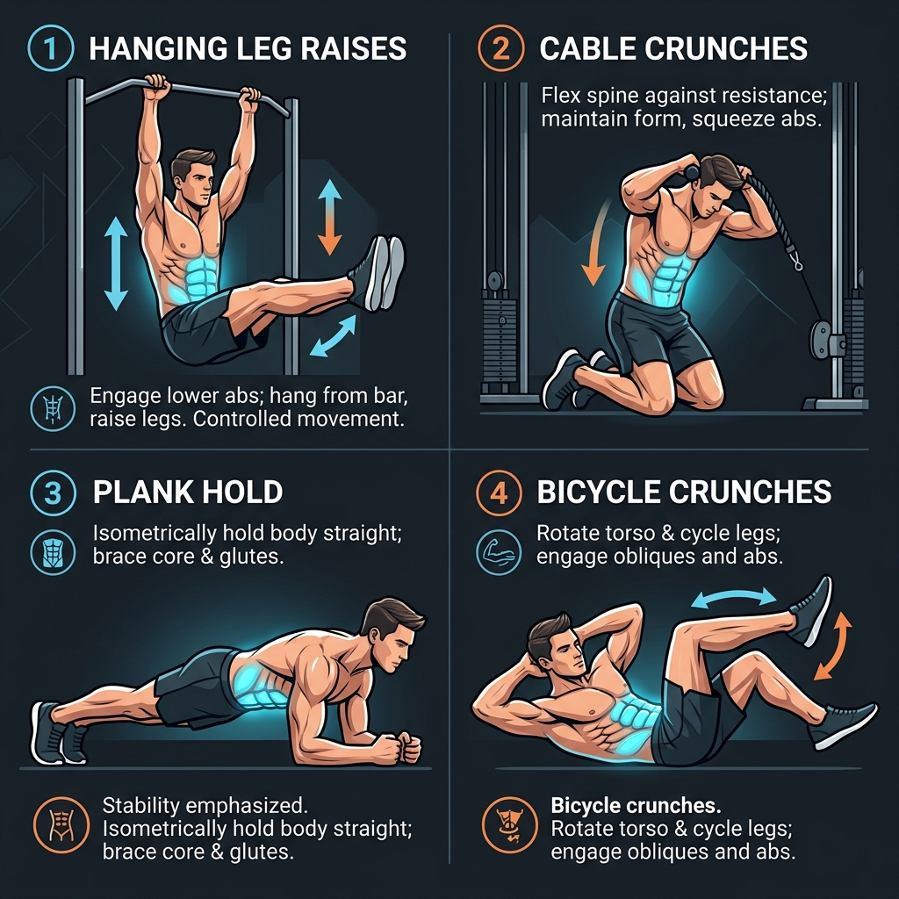
Six pack abs KITCHEN me bante hain — diet se body fat kam karna padta hai (12-15% target karo). Ab exercises abs ko BUILD karte hain, lekin fat layer hatane ke liye calorie deficit chahiye. Tu lean bulk pe hai toh pehle muscle build karo, phir fat cutting phase me abs dikhengi. Lekin ab exercises karna zaruri hai taaki jab fat kam hoga, abs well-developed dikhengi!
Lower abs ka #1 exercise. Agar straight leg nahi kar pa raha toh knee raises se start karo. Pelvis ko tilt karo (curl karo) — sirf legs uthane se hip flexors kaam karengi. Captain's chair pe bhi kar sakte ho.
Swinging body. Hip flexors dominant. Legs raising without pelvis tilt. Momentum use.
Progressive overload possible hai (weight badha sakte ho) — floor crunches me nahi hota. Upper abs + overall ab thickness build karta hai. Focus: spine CURLING, not hips bending.
Hip hinge karna instead of spine curl. Arms se pull karna. Sitting back on heels.
Core stability build karta hai — sabhi heavy lifts me help karta hai. Transverse abdominis target hoti hai — yeh internal muscle hai jo waist tight rakhti hai. 60s easy ho jaaye toh weight plate back pe rakho.
Hips zyada upar (pike position). Hips sagging (lower back stress). Holding breath. Looking up (neck strain).
Obliques (side abs) + rectus abdominis dono ek me. V-cut waistline ke liye obliques zaruri hain. Slow karo — fast pedaling se benefit nahi milta. Feel the squeeze each side.
Neck pull karna hands se. Speed over control. Hips rocking. Incomplete twist.
57 kg se 70 kg tak le jaane ke liye caloric surplus + high protein chahiye. Night gym (8 PM) ke around optimized meal timing. Dubai-friendly foods — budget me fit! 💰
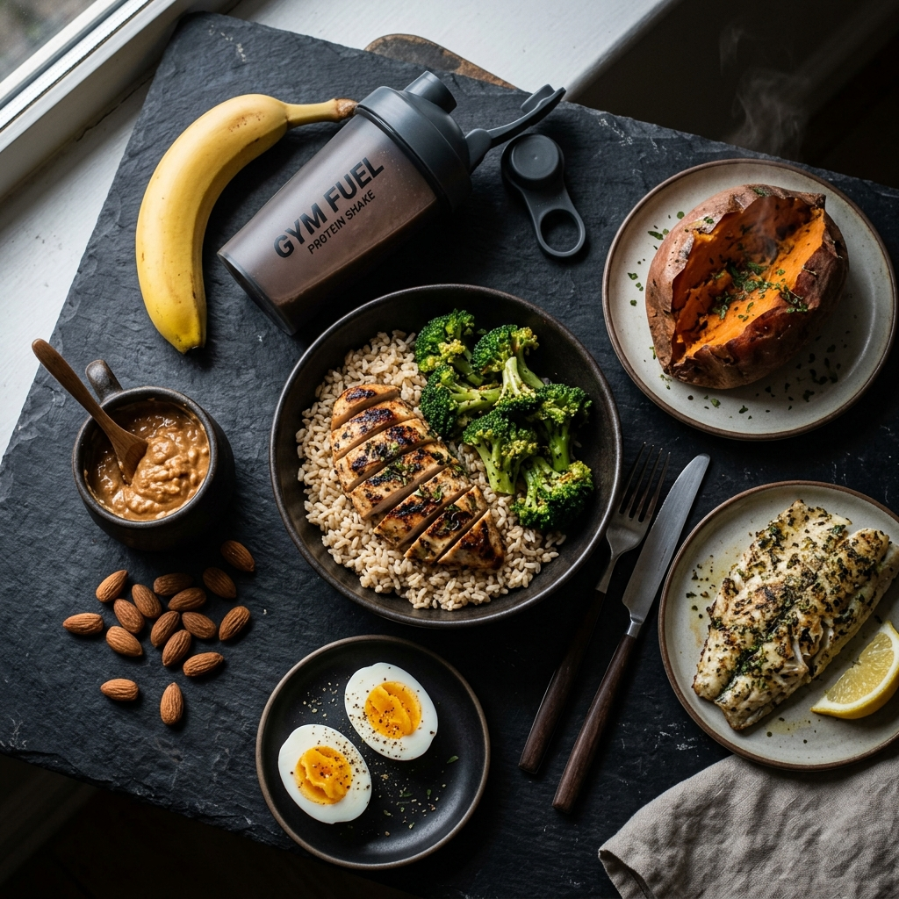
Lean bulk me tu maintenance calories (2400) se 300-400 zyada khaata hai — isse muscle build hoti hai with MINIMAL fat gain. Dirty bulk (junk food bhar ke khaana) se bahut zyada fat lagta hai. Tere goal ke liye lean bulk PERFECT hai — muscle gain hogi aur fat controlled rahega. Per month 1-1.5 kg weight gain target karo.
Din ka sabse important meal — raat bhar ke fast ke baad body ko fuel chahiye. Protein + complex carbs ka combo.
Meals ke beech me gap bahut zyada nahi hona chahiye — consistent fuel supply body ko muscle building mode me rakhti hai.
Din ka biggest meal — maximum protein + carbs yahan chahiye. Body ko building blocks chahiye.
Office se aane ke baad — energy replenish karo gym se pehle. Light but nutritious.
CRITICAL MEAL! Gym se 30-60 min pehle — fast digesting carbs + moderate protein. Energy chahiye training ke liye. Heavy meal mat karo — light but effective.
1-1.5 hour intense training. Sip water throughout — 500ml minimum during workout. Intra-workout me BCAA mix kar sakte ho agar budget allow kare.
MOST IMPORTANT MEAL! Workout ke 30 min ke andar protein + carbs chahiye. Muscle repair aur glycogen replenishment ke liye critical hai. Yahan Protein Shake best hai — fast absorbing.
Late dinner — light but protein-rich. Body raat bhar recover karegi — protein slow-digesting chahiye. Complex carbs limit karo yahan — sleep quality better rahegi.
Har meal me 25-40g protein rakhna — body ek baar me ~40g se zyada efficiently use nahi kar sakti. Isliye 5-7 meals me distribute karna best hai instead of 2 bade meals me sab khaana.
Dubai me garmi hai — dehydration muscle recovery slow karti hai. Minimum 3-4 liters daily. Pee ka color light yellow/clear hona chahiye — dark hai toh paani kam pee rahe ho.
Week me 1 cheat MEAL (not cheat day!) allowed — Sunday rest day pe. Burger, Pizza — jo mann kare. Lekin baki 6 din strict follow karo. Cheat meal metabolism ko boost karta hai aur cravings control me rakhta hai.
Sugary drinks (Pepsi, Coca Cola), fried snacks (samosa, pakoda daily), white bread replace karo brown bread se, maida-based foods avoid karo. Alcohol muscle recovery 50% slow kar deti hai — avoid completely.
Chicken breast — Carrefour/Lulu se bulk buy karo (cheaper). Eggs — tray (30) lao. Brown rice — 5kg bags. Bananas — sabse sasta fruit. Peanut butter — local brands. Fish — tilapia sasta hai. Oats — for breakfast variation.
7-8 hours sleep MINIMUM. Muscles gym me nahi — SONE me banti hain. Growth hormone (GH) sleep me peak pe hota hai. Late gym hai toh 11:30 PM tak so jaana try karo. Dark room, no phone 30 min before bed.
UAE me available best supplements — budget me fit. Sirf proven supplements recommend karunga — snake oil nahi! 🐍❌
Whey protein sabse fast absorbing protein hai — post-workout ke liye BEST. 1 scoop me 24-25g high-quality protein milta hai.
🏆 Post-Workout (MUST): 1 scoop (30g) + 250ml cold milk + 1 banana — blend karke shake bana. Workout ke 15-30 min ke andar lena hai.
☀️ Morning (Optional): Agar breakfast me protein kam hai toh — 1 scoop milk ke saath morning me bhi le sakte ho.
📊 Daily Total: 1-2 scoops max. Baaki protein real food se aani chahiye.
250ml COLD milk + 1 scoop whey + 1 banana — blender me ya shaker bottle me shake karo. Garam milk me mat daalao — protein denature ho sakta hai. Paani se bhi bana sakte ho but milk se taste better aur extra calories milti hain (lean bulk ke liye perfect).
SABSE RESEARCHED supplement — 100% safe aur proven. Strength 10-15% badhata hai, muscles me water retention se fuller look deta hai, recovery faster hoti hai.
📊 Daily: 5g (1 teaspoon) — ROZANA, workout day ho ya rest day.
⏰ Timing: Post-workout protein shake me mix kar lo — ya kisi bhi time le lo, timing matter nahi karta.
💧 Important: Extra 500ml paani daily piyo — creatine water retain karta hai muscles me.
🚫 Loading Phase: Zaruri NAHI hai. Direct 5g daily se shuru karo. 2-3 weeks me effect dikhega.
Dubai me dhoop zyada hai but Vitamin D ka supplement zaruri hai (AC me rehte ho mostly). Plus zinc, magnesium — testosterone support ke liye crucial hain.
📊 Daily: 1 tablet breakfast ke saath — khane ke baad lo (empty stomach pe mat lo — nausea hota hai).
☀️ Vitamin D: 2000-4000 IU extra supplement lo agar multivitamin me kam hai — Dubai me mostly indoor rehte ho toh deficiency hoti hai.
Joint health, inflammation reduce, heart health, aur brain function — sab ke liye. Agar weekly 2x fish nahi kha raha toh zaruri hai.
📊 Daily: 1-2 capsules (1000mg) lunch/dinner ke saath — fatty meal ke saath better absorb hota hai.
| 🥤 Whey Protein (2 lbs) | ~180 AED |
| ⚡ Creatine (300g) | ~35 AED/month |
| 💎 Multivitamin | ~40 AED |
| 🐟 Fish Oil | ~25 AED/month |
| TOTAL | ~280 AED/month |
Budget me fit hai (400-700 AED range) — baaki amount food pe invest karo! 🍗
Online: Amazon.ae, Noon.com, iHerb.com (ships to UAE), Sporter.com (UAE based — fast delivery, good prices). Physical Stores: Life Pharmacy, Bin Sina Pharmacy, GNC stores (malls me), Nutrition Zone. Important: Sirf sealed products lo — duplicate protein powders bahut common hain UAE me. Amazon pe "Sold by Amazon" ya authorized seller se lo.
Har hafte apna weight aur measurements log karo. Jo measure hota hai, woh improve hota hai! 📈
No entries yet. Start tracking! 📊
Weight: Subah uthke, bathroom jaake, khaali pet — yahi accurate weight hai. Har week same time pe.
Chest: Tape nipple line pe, normal breathing me.
Arms: Bicep flex karke, sabse mote part pe.
Waist: Belly button ke level pe, relaxed state me.
Weekly tracking karo — daily weight fluctuations normal hain (water, food weight). Weekly average dekho.